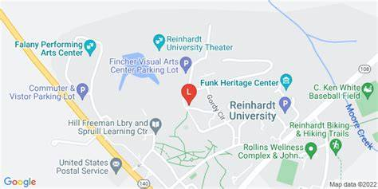

Read more to learn about campus events in college on Page 1 .
Read more to learn about campus dining in college on Page 2 .
Read more to learn about campus locations in college on Page 3 .

A gym where students can go to excercise and where basketball and vollyball events are held. Athletic students also train there too.